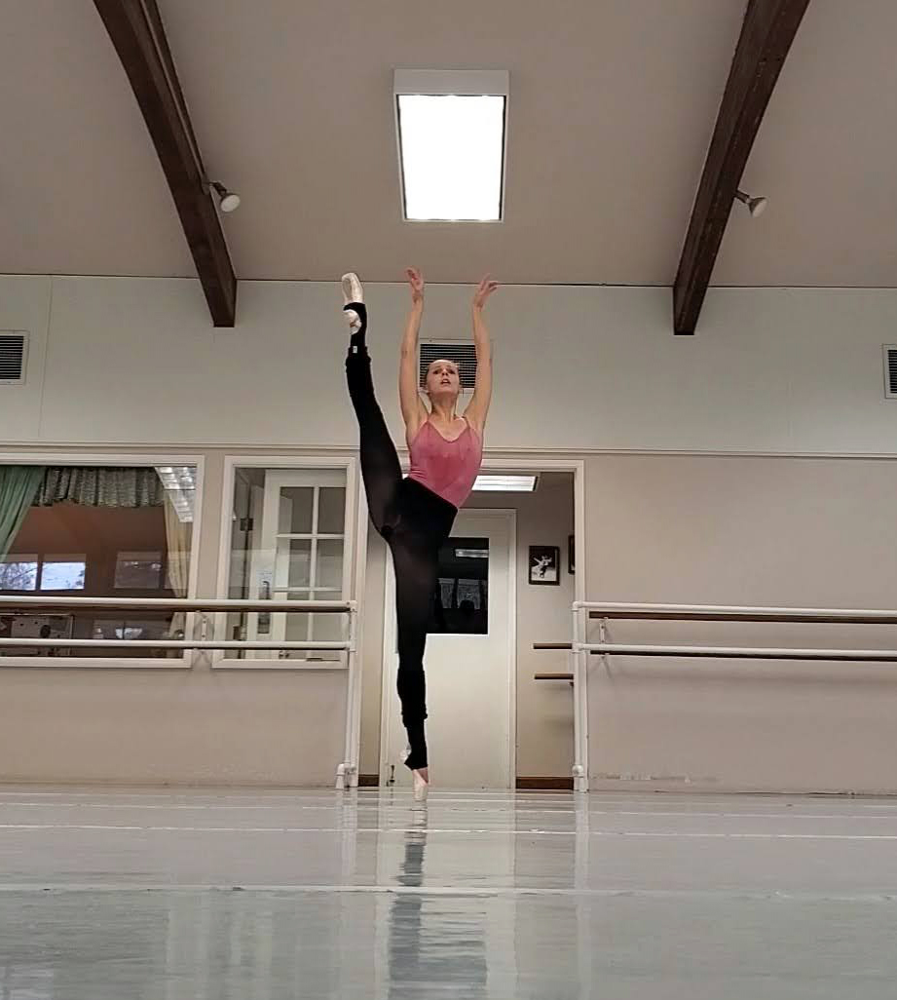

Ruth Langill
Training and Scholarships
- Art of Ballet Summer Course - Madrid -- 2016 and 2018
- Professional Master class series, Directed by Oleg Klymyuk Supported by William Forsyth
- Texas Ballet Theater Summer Intensive -- 2013 & 2014(scholarship)
- - Ben Stevenson
- Pacific Northwest Ballet Summer Course -- 2010 (scholarship)
- - Peter Boal
- Capitol Ballet Center -- 2010-2013 (scholarship)
- -Stuart Carroll, Sharon Newton
- State Street Ballet Summer Intensive -- 2009 (scholarship)
- - Rodney Gustafson
- The Conservatory of Dance -- 2005-2010
- Instructors: Cassie Minehart, Bruce L. King
